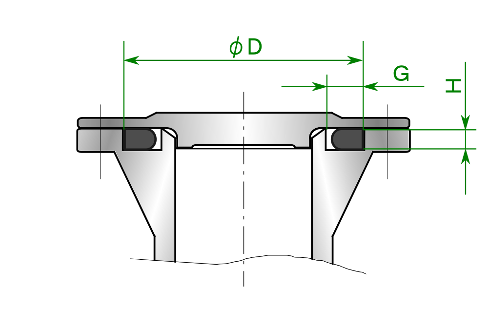
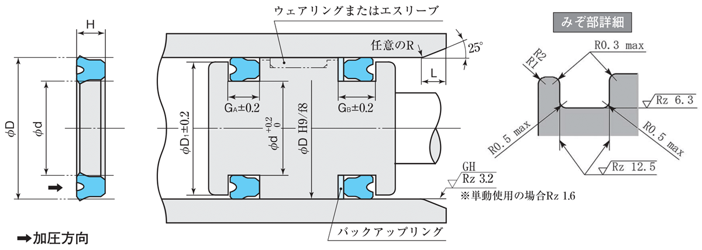
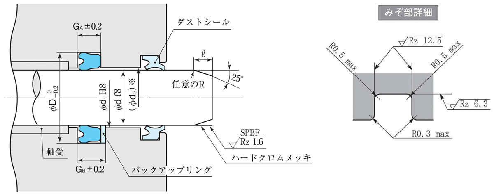

溝の断面図（平面溝・内圧用）

出典：さくらシール Oリング G規格 サイズ表（平面溝-内圧用）
SKY 寸法指示図（ピストン用）

SKY 寸法指示図（ロッド用）

出典：阪上製作所 SKYパッキン 製品ページ。検索結果をタップすると、その製品の図に切り替わります。
寸法を入力して［検索］を押してください。
※ 検索結果は参考値です。採用前に、必ず各メーカーのカタログ・JIS 規格で寸法と公差を確認してください。「未照合」の札は、出典の原本との照合がまだのデータです。